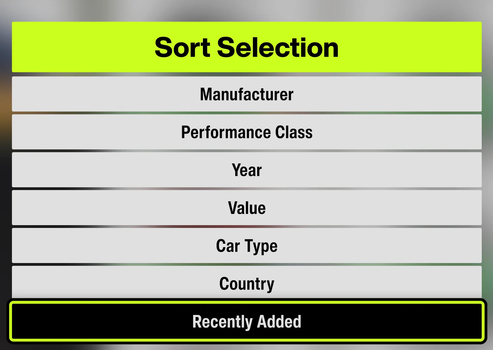
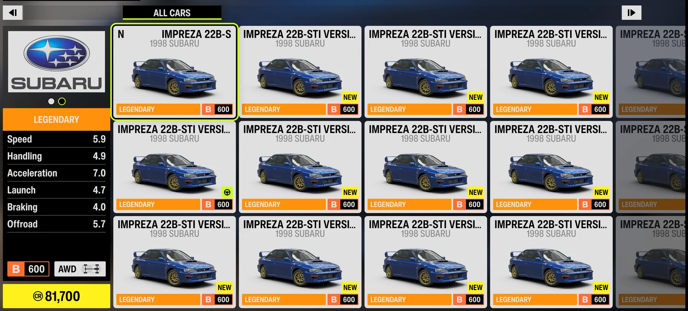
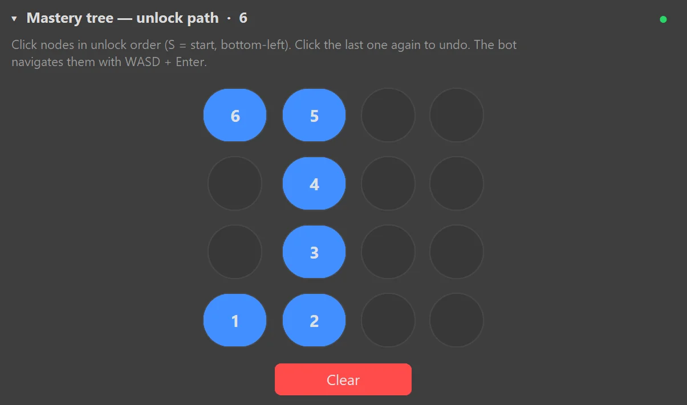
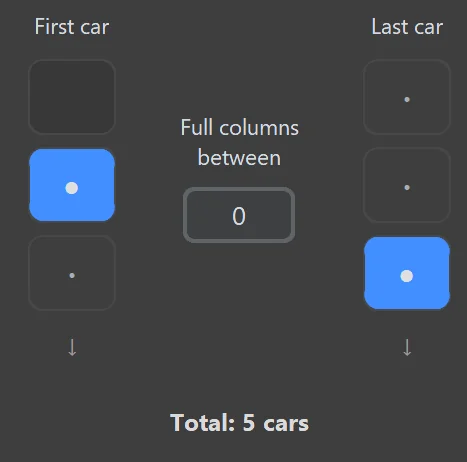

Auto Unlock Wheelspins from the Mastery Tree
This feature is not limited to the 22B-STI. Configure the mastery-tree path for your target car, select a contiguous garage range, and FAFE will process those cars automatically.
Prepare the cars
Place the cars you want to process in one contiguous garage range. FAFE moves top-to-bottom, column by column, so do not include unrelated cars inside that range. You do not need to delete other cars elsewhere in the garage.
Sort by Recently Added
On the garage screen, press X to open the sort menu and choose Recently Added. FAFE re-sorts after completing each car.

Start from the My Home garage
Leave Forza on the My Home garage screen—not the Horizon Festival map menu. The first car may be in the top, middle, or bottom row of the starting column; select the same row under First car in FAFE.

Configure the mastery-tree path in order
Begin at the bottom-left S starting point, then click each adjacent node in the exact order FAFE should travel until it reaches the Wheelspin reward. The blue numbers show the sequence: 1 → 2 → 3 → 4…. Include every intermediate node rather than clicking only the final reward.
FAFE follows this sequence using WASD + Enter. To undo a mistake, click the last selected node again; use Clear to reset the entire path.

Select the garage range
Use First car to choose the starting row, Last car to choose the ending row, and Full columns between for complete columns between them. Blue dots are selected positions, and Total shows how many cars FAFE will process.

Start the automation
Open ⭐ Unlock Wheelspins in the sidebar, then click ▶ Start or press F9. The countdown is 3 seconds; with background mode enabled, you do not need to switch back to Forza.
Let FAFE process the range
FAFE enters each car, opens Car Mastery, unlocks the configured nodes, returns to the garage, and advances to the next car until the selected range is complete.